This vignette will demonstrate pmxhelpr functions for
simulation-based visual predictive check (VPC) and prediction-corrected
visual predictive check (pcVPC) evaluation of models fit to
concentration-time data.
options(scipen = 999, rmarkdown.html_vignette.check_title = FALSE)
library(pmxhelpr)
library(dplyr, warn.conflicts = FALSE)
library(ggplot2, warn.conflicts = FALSE)
library(mrgsolve, warn.conflicts = FALSE)
library(withr, warn.conflicts = FALSE)
library(patchwork, warn.conflicts = FALSE)The continuous-range VPC plots in this vignette share a common axes /
labels layer (time on x with breaks every 24 hours, concentration on a
log10 y-axis). Defining a single list object lets each plot reuse it
with + vpc_scales_labs; pcVPC views override the y label
with + labs(y = ...) afterwards. The censored-range VPCs
use a parallel vpc_cens_scales_labs for the BLQ-proportion
plots.
vpc_scales_labs <- list(
labs(x = "Time (hours)", y = "Concentration (ng/mL)"),
scale_x_continuous(breaks = seq(0, 168, 24)),
scale_y_log10(guide = "axis_logticks")
)
vpc_cens_scales_labs <- list(
labs(x = "Time (hours)", y = "Proportion BLQ"),
scale_x_continuous(breaks = seq(0, 168, 24))
)Data
The example dataset used in this vignette (data_sad) is
based on a single ascending dose (SAD) study of an orally administered
drug product with a parallel group food effect (FE) cohort. This
vignette will assume familiarity with the data_sad internal
dataset and the plot_dvtime() function, as described in the
Exploratory Analyses of PK and PK/PD
Data vignette. These elements will not be reviewed in detail in this
vignette.
data_sad
Dataset definitions can be viewed by calling ?data_sad.
A quick summary of variables and types is printed below.
glimpse(data_sad)
#> Rows: 1,404
#> Columns: 25
#> $ ID <dbl> 1, 1, 1, 1, 1, 1, 1, 1, 1, 1, 1, 1, 1, 1, 1, 1, 1, 1, 1, 1, 1,…
#> $ TIME <dbl> 0.00, 0.00, 0.00, 0.48, 0.48, 0.81, 0.81, 1.49, 1.49, 2.11, 2.…
#> $ NTIME <dbl> 0.0, 0.0, 0.0, 0.5, 0.5, 1.0, 1.0, 1.5, 1.5, 2.0, 2.0, 3.0, 3.…
#> $ NDAY <dbl> 1, 1, 1, 1, 1, 1, 1, 1, 1, 1, 1, 1, 1, 1, 1, 1, 1, 1, 1, 1, 1,…
#> $ DOSE <dbl> 10, 10, 10, 10, 10, 10, 10, 10, 10, 10, 10, 10, 10, 10, 10, 10…
#> $ AMT <dbl> 10, NA, NA, NA, NA, NA, NA, NA, NA, NA, NA, NA, NA, NA, NA, NA…
#> $ EVID <dbl> 1, 0, 0, 0, 0, 0, 0, 0, 0, 0, 0, 0, 0, 0, 0, 0, 0, 0, 0, 0, 0,…
#> $ ODV <dbl> NA, NA, 100.00000, NA, 99.87700, 2.02000, 99.44932, 4.02000, 9…
#> $ LDV <dbl> NA, NA, 100.00000, NA, 99.87700, 0.70310, 99.44932, 1.39130, 9…
#> $ CFB <dbl> NA, NA, 0.0000000, NA, -0.1229974, NA, -0.5506789, NA, -2.3928…
#> $ CONC <dbl> NA, NA, 0.00, NA, 0.00, NA, 2.02, NA, 4.02, NA, 3.50, NA, 7.18…
#> $ LINE <dbl> 2, 1, 1, 3, 3, 4, 4, 5, 5, 6, 6, 7, 7, 8, 8, 9, 9, 10, 10, 11,…
#> $ CMT <dbl> 1, 2, 3, 2, 3, 2, 3, 2, 3, 2, 3, 2, 3, 2, 3, 2, 3, 2, 3, 2, 3,…
#> $ MDV <dbl> NA, 1, 1, 1, 1, 0, 0, 0, 0, 0, 0, 0, 0, 0, 0, 0, 0, 0, 0, 0, 0…
#> $ BLQ <dbl> NA, -1, -1, 1, 1, 0, 0, 0, 0, 0, 0, 0, 0, 0, 0, 0, 0, 0, 0, 0,…
#> $ LLOQ <dbl> NA, 1, 1, 1, 1, 1, 1, 1, 1, 1, 1, 1, 1, 1, 1, 1, 1, 1, 1, 1, 1…
#> $ FOOD <dbl> 0, 0, 0, 0, 0, 0, 0, 0, 0, 0, 0, 0, 0, 0, 0, 0, 0, 0, 0, 0, 0,…
#> $ SEXF <dbl> 1, 1, 1, 1, 1, 1, 1, 1, 1, 1, 1, 1, 1, 1, 1, 1, 1, 1, 1, 1, 1,…
#> $ RACE <dbl> 2, 2, 2, 2, 2, 2, 2, 2, 2, 2, 2, 2, 2, 2, 2, 2, 2, 2, 2, 2, 2,…
#> $ AGEBL <int> 25, 25, 25, 25, 25, 25, 25, 25, 25, 25, 25, 25, 25, 25, 25, 25…
#> $ WTBL <dbl> 82.1, 82.1, 82.1, 82.1, 82.1, 82.1, 82.1, 82.1, 82.1, 82.1, 82…
#> $ SCRBL <dbl> 0.87, 0.87, 0.87, 0.87, 0.87, 0.87, 0.87, 0.87, 0.87, 0.87, 0.…
#> $ CRCLBL <dbl> 128, 128, 128, 128, 128, 128, 128, 128, 128, 128, 128, 128, 12…
#> $ USUBJID <chr> "STUDYNUM-SITENUM-1", "STUDYNUM-SITENUM-1", "STUDYNUM-SITENUM-…
#> $ PART <chr> "Part 1-SAD", "Part 1-SAD", "Part 1-SAD", "Part 1-SAD", "Part …PART specifies the two study cohorts:
- Single Ascending Dose (SAD)
- Food Effect (FE).
unique(data_sad$PART)
#> [1] "Part 1-SAD" "Part 2-FE"This dataset also contains an exact binning variable:
- Nominal Time (NTIME).
This variable represents the nominal time of sample collection relative to first dose per study protocol whereas Actual Time (TIME) represents the actual time the sample was collected.
##Unique values of NTIME
unique(data_sad$NTIME)
#> [1] 0.0 0.5 1.0 1.5 2.0 3.0 4.0 5.0 8.0 12.0 16.0 24.0
#> [13] 36.0 48.0 72.0 96.0 120.0 144.0 168.0
##Comparison of number of unique values of NTIME and TIME
length(unique(data_sad$NTIME))
#> [1] 19
length(unique(data_sad$TIME))
#> [1] 449Let’s define some variables that may be useful in plotting and filter down to PK relevant records.
PK Model
An example PK model (pkmodel) in mrgmod
format is provided in the internal package library. This can be loaded
using the helper function model_mread_load(), which wraps
mrgsolve::mread.
model <- model_mread_load("pkmodel")
#> Building pkmodel_cpp ... done.We can take a look at the model code using
mrgsolve::see
mrgsolve::see(model)
#>
#> Model file: pkmodel.cpp
#> $PARAM
#> TVCL = 20
#> TVVC = 35.7
#> TVKA = 0.3
#> TVQ = 25
#> TVVP = 150
#> DOSE_F1 = 0.33
#>
#> WT_CL = 0.75
#> WT_VC = 1.00
#> WT_Q = 0.75
#> WT_VP = 1.00
#> FOOD_KA = -0.5
#> FOOD_F1 = 1.33
#>
#> WT = 70
#> DOSE = 100
#> FOOD = 0
#>
#> $CMT GUT CENT PERIPH TRANS1 TRANS2
#>
#> $MAIN
#> double CL = TVCL*pow(WT/70,WT_CL)*exp(ETA_CL);
#> double VC = TVVC*pow(WT/70, WT_VC)*exp(ETA_VC);
#> double Q = TVCL*pow(WT/70,WT_Q)*exp(ETA_Q);
#> double VP = TVVP*pow(WT/70, WT_VP)*exp(ETA_VP);
#> double KA = TVKA*(1+FOOD_KA*FOOD)*exp(ETA_KA);
#> double F1 = 1*(1+FOOD_F1*FOOD)*pow(DOSE/100,DOSE_F1);
#>
#> F_GUT = F1;
#>
#> $ODE
#> dxdt_GUT = -KA*GUT;
#> dxdt_CENT = KA*TRANS1 - (CL/VC)*CENT + (Q/VP)*PERIPH - (Q/VC)*CENT;
#> dxdt_PERIPH = (Q/VC)*CENT - (Q/VP)*PERIPH;
#> dxdt_TRANS1 = KA*GUT - KA*TRANS1;
#> dxdt_TRANS2 = KA*TRANS1 - KA*TRANS2;
#>
#> $OMEGA @labels ETA_CL ETA_VC ETA_KA ETA_Q ETA_VP
#> 0.075 0.1 0.2 0 0
#>
#> $SIGMA @labels PROP
#> 0.09
#>
#> $TABLE
#> capture IPRED = CENT/(VC/1000);
#> capture DV = IPRED*(1+PROP);
#> capture Y = DV;We can use this PK model to add population predictions
("PRED") to our dataset with the function
df_mrgsim_addpred(), which wraps
mrgsolve::mrgsim_df() with mrgsolve::zero_re()
to return an input dataset with population predictions appended. This
function is called automatically within
df_mrgsim_replicate() in the VPC Workflow; therefore, it
does not need to be separately called for the VPC purpose.
This function takes data.frame and mrgmod
objects as input and an optional argument to specify the model variable
to capture as "PRED" with random effects zeroed. The
default is "IPRED".
data_sad_pk_pred <- df_mrgsim_addpred(data_sad_pk, model, output_var = "IPRED")
colnames(data_sad_pk_pred)[!colnames(data_sad_pk_pred) %in% colnames(data_sad_pk)]
#> [1] "PRED"VPC Workflow
pmxhelpr includes two functions for calculating summary
statistics across simulated replicates of an input dataset and plotting
the output for model evaluation: df_vpcstats and
plot_vpc_cont().
The df_vpcstats function can be called within
plot_vpc_cont(), for a one function call calculation and
visualization of VPC statistics. df_vpcstats returns a
pmx_stats container with stats (summary
statistics of simulated and observed data), obs (observed
data points for overlay), and config (run configuration)
slots. The returned output can be passed directly into
plot_vpc_cont() or the full pipeline can be run within the
plotting function.
Many VPC tools use automatic binning algorithms (e.g., Jenks natural breaks, k-means, density) to determine bin intervals from the data. While these are useful for datasets without a pre-defined binning variable, they are not optimized to leverage input datasets with a variable representing exact bin times (e.g., nominal or protocol-specified times). Additionally, when a dataset contains an exact binning variable, these algorithms may not reproduce the exact bins. For example, absorption phase timepoints that are close together may be grouped into a single bin, obscuring important pharmacokinetic details.
The presence of exact bins in the data is a common scenario in
pharmacometrics, as Clinical Study Protocols specify the times of PK
sampling. plot_vpc_cont() uses the unique values of the
nominal time variable directly as exact bins, ensuring that summary
statistics are calculated at visualized at the protocol-specified
sampling times.
Running the simulation with df_mrgsim_replicate()
Overview
pmxhelpr includes a function for running multiple
replicates of a data set via simulation:
df_mrgsim_replicate()
df_mrgsim_replicate() is a wrapper function for
mrgsim_df(), which uses lapply() to iterate
the simulation over integers from 1 to the value passed to the argument
replicates.
There are 3 required arguments to
df_mrgsim_replicate()
-
data, adata.framemodeling analysis dataset -
model, amrgmodmodel object -
replicates, numeric number of replicates to perform.
The are optional arguments specifying key dataset variables to be input into the simulation or captured in output. These include:
-
dv_var= DV, dependent variable -
time_var= TIME, actual time variable -
ntime_var= NTIME, nominal time variable -
pred_var= PRED, population prediction variable (fixed effects only) -
ipred_var= IPRED, individual prediction variable (fixed + level 1 random effects) -
sim_dv_var= DV, dependent variable captured in the simulated output (fixed + level 1 and 2 random effects)
These arguments use non-standard evaluation and can be passed as a bare column name or as a string.
We can pass data_sad_pk and model and run
the simulation for 100 replicates. The names of actual and
nominal time variables in data_sad match the default
arguments; however, our dependent variable is named ODV,
which must be specified in the dv_var argument, since it
differs from the default (DV).
simout <- df_mrgsim_replicate(
data = data_sad_pk,
model = model,
replicates = 100,
dv_var = ODV,
carry_out = c("DOSE", "FOOD", "BLQ", "LLOQ"),
recover = c("PART", "DoseFood"))
glimpse(simout)
#> Rows: 72,000
#> Columns: 23
#> $ ID <dbl> 1, 1, 1, 1, 1, 1, 1, 1, 1, 1, 1, 1, 1, 1, 1, 1, 1, 1, 1, 1, 2…
#> $ TIME <dbl> 0.00, 0.00, 0.48, 0.81, 1.49, 2.11, 3.05, 4.14, 5.14, 7.81, 1…
#> $ NTIME <dbl> 0.0, 0.0, 0.5, 1.0, 1.5, 2.0, 3.0, 4.0, 5.0, 8.0, 12.0, 16.0,…
#> $ PRED <dbl> 0.0000000000, 0.0000000000, 1.0373644222, 2.4699025938, 5.869…
#> $ IPRED <dbl> 0.00000000000, 0.00000000000, 0.23991271053, 0.58097762508, 1…
#> $ SIMDV <dbl> 0.00000000000, 0.00000000000, 0.27955022508, 0.74917139938, 1…
#> $ OBSDV <dbl> NA, NA, NA, 2.02, 4.02, 3.50, 7.18, 9.31, 12.46, 13.43, 12.11…
#> $ EVID <dbl> 1, 0, 0, 0, 0, 0, 0, 0, 0, 0, 0, 0, 0, 0, 0, 0, 0, 0, 0, 0, 1…
#> $ CMT <dbl> 1, 2, 2, 2, 2, 2, 2, 2, 2, 2, 2, 2, 2, 2, 2, 2, 2, 2, 2, 2, 1…
#> $ MDV <dbl> NA, 1, 1, 0, 0, 0, 0, 0, 0, 0, 0, 0, 0, 0, 1, 1, 1, 1, 1, 1, …
#> $ DOSE <dbl> 10, 10, 10, 10, 10, 10, 10, 10, 10, 10, 10, 10, 10, 10, 10, 1…
#> $ FOOD <dbl> 0, 0, 0, 0, 0, 0, 0, 0, 0, 0, 0, 0, 0, 0, 0, 0, 0, 0, 0, 0, 0…
#> $ BLQ <dbl> NA, -1, 1, 0, 0, 0, 0, 0, 0, 0, 0, 0, 0, 0, 1, 1, 1, 1, 1, 1,…
#> $ LLOQ <dbl> NA, 1, 1, 1, 1, 1, 1, 1, 1, 1, 1, 1, 1, 1, 1, 1, 1, 1, 1, 1, …
#> $ GUT <dbl> 4.67735141287198175, 4.67735141287198175, 4.34652773939926984…
#> $ CENT <dbl> 0.000000000000, 0.000000000000, 0.009786371098, 0.02369888042…
#> $ PERIPH <dbl> 0.00000000000, 0.00000000000, 0.00080390625, 0.00337854545, 0…
#> $ TRANS1 <dbl> 0.0000000000000000, 0.0000000000000000, 0.3188382667608536, 0…
#> $ TRANS2 <dbl> 0.00000000000000, 0.00000000000000, 0.01169414527583, 0.03166…
#> $ Y <dbl> 0.00000000000, 0.00000000000, 0.27955022508, 0.74917139938, 1…
#> $ PART <chr> "Part 1-SAD", "Part 1-SAD", "Part 1-SAD", "Part 1-SAD", "Part…
#> $ DoseFood <chr> "10 mg Fasted", "10 mg Fasted", "10 mg Fasted", "10 mg Fasted…
#> $ SIM <int> 1, 1, 1, 1, 1, 1, 1, 1, 1, 1, 1, 1, 1, 1, 1, 1, 1, 1, 1, 1, 1…
max(simout$SIM)
#> [1] 100The simulation has appended some key variables with standardized
names that will allow us to take advantage of default arguments in later
pipeline functions: - PRED (population prediction) -
IPRED (individual prediction) - SIMDV
(simulated dependent variable) - OBSDV (observed dependent
variable).
These variable standard names are output regardless of the input
name. For example, we can see from the glimpse() output
that the simulation also outputs "Y", which represents a
simulated version of DV. We will still receive the same standardized
output variable names if we change argument form
sim_dv_var, as the variables are renamed to VPC workflow
standards on output
simout <- df_mrgsim_replicate(data = data_sad_pk,
model = model,
replicates = 100,
dv_var = ODV,
sim_dv_var = Y,
carry_out = c("DOSE", "FOOD", "BLQ", "LLOQ"),
recover = c("PART", "DoseFood"))
glimpse(simout)
#> Rows: 72,000
#> Columns: 23
#> $ ID <dbl> 1, 1, 1, 1, 1, 1, 1, 1, 1, 1, 1, 1, 1, 1, 1, 1, 1, 1, 1, 1, 2…
#> $ TIME <dbl> 0.00, 0.00, 0.48, 0.81, 1.49, 2.11, 3.05, 4.14, 5.14, 7.81, 1…
#> $ NTIME <dbl> 0.0, 0.0, 0.5, 1.0, 1.5, 2.0, 3.0, 4.0, 5.0, 8.0, 12.0, 16.0,…
#> $ PRED <dbl> 0.0000000000, 0.0000000000, 1.0373644222, 2.4699025938, 5.869…
#> $ IPRED <dbl> 0.00000000000, 0.00000000000, 0.23991271053, 0.58097762508, 1…
#> $ SIMDV <dbl> 0.00000000000, 0.00000000000, 0.27955022508, 0.74917139938, 1…
#> $ OBSDV <dbl> NA, NA, NA, 2.02, 4.02, 3.50, 7.18, 9.31, 12.46, 13.43, 12.11…
#> $ EVID <dbl> 1, 0, 0, 0, 0, 0, 0, 0, 0, 0, 0, 0, 0, 0, 0, 0, 0, 0, 0, 0, 1…
#> $ CMT <dbl> 1, 2, 2, 2, 2, 2, 2, 2, 2, 2, 2, 2, 2, 2, 2, 2, 2, 2, 2, 2, 1…
#> $ MDV <dbl> NA, 1, 1, 0, 0, 0, 0, 0, 0, 0, 0, 0, 0, 0, 1, 1, 1, 1, 1, 1, …
#> $ DOSE <dbl> 10, 10, 10, 10, 10, 10, 10, 10, 10, 10, 10, 10, 10, 10, 10, 1…
#> $ FOOD <dbl> 0, 0, 0, 0, 0, 0, 0, 0, 0, 0, 0, 0, 0, 0, 0, 0, 0, 0, 0, 0, 0…
#> $ BLQ <dbl> NA, -1, 1, 0, 0, 0, 0, 0, 0, 0, 0, 0, 0, 0, 1, 1, 1, 1, 1, 1,…
#> $ LLOQ <dbl> NA, 1, 1, 1, 1, 1, 1, 1, 1, 1, 1, 1, 1, 1, 1, 1, 1, 1, 1, 1, …
#> $ GUT <dbl> 4.67735141287198175, 4.67735141287198175, 4.34652773939926984…
#> $ CENT <dbl> 0.000000000000, 0.000000000000, 0.009786371098, 0.02369888042…
#> $ PERIPH <dbl> 0.00000000000, 0.00000000000, 0.00080390625, 0.00337854545, 0…
#> $ TRANS1 <dbl> 0.0000000000000000, 0.0000000000000000, 0.3188382667608536, 0…
#> $ TRANS2 <dbl> 0.00000000000000, 0.00000000000000, 0.01169414527583, 0.03166…
#> $ DV <dbl> 0.00000000000, 0.00000000000, 0.27955022508, 0.74917139938, 1…
#> $ PART <chr> "Part 1-SAD", "Part 1-SAD", "Part 1-SAD", "Part 1-SAD", "Part…
#> $ DoseFood <chr> "10 mg Fasted", "10 mg Fasted", "10 mg Fasted", "10 mg Fasted…
#> $ SIM <int> 1, 1, 1, 1, 1, 1, 1, 1, 1, 1, 1, 1, 1, 1, 1, 1, 1, 1, 1, 1, 1…Changing the Replicate Counter
The maximum value of our replicate count variable (default =
"SIM") indicates that the dataset has been replicated 100
times. The variable name output for the count of replicates can be
specified using the irep_name argument.
This argument uses non-standard evaluation and can be supplied as a bare name or string
simout <- df_mrgsim_replicate(data = data_sad_pk,
model = model,
replicates = 100,
dv_var = ODV,
irep_name = IREP,
carry_out = c("DOSE", "FOOD", "BLQ", "LLOQ"),
recover = c("PART", "DoseFood"))
max(simout$IREP)
#> [1] 100Carrying Input Columns to the Output
df_mrgsim_replicate() does not auto-carry input columns.
Use carry_out and recover (passed through
... to mrgsim_df()) to list the columns you
want propagated to the output:
-
carry_out: character vector of numeric input column names to carry to the output. Best for numeric columns (DOSE,FOOD,BLQ,LLOQ, …). -
recover: character vector of input column names of any type to restore to the output. Best for character / factor columns (PART,DoseFood, …).
The always-carried set (EVID, MDV,
CMT, TIME, NTIME,
OBSDV, PRED) is appended internally so the
wrapper’s standardized output structure is preserved regardless of what
you pass.
simout <- df_mrgsim_replicate(data = data_sad_pk,
model = model,
replicates = 100,
dv_var = ODV,
carry_out = c("DOSE", "FOOD", "BLQ", "LLOQ"),
recover = c("PART", "DoseFood"))
colnames(simout)
#> [1] "ID" "TIME" "NTIME" "PRED" "IPRED" "SIMDV"
#> [7] "OBSDV" "EVID" "CMT" "MDV" "DOSE" "FOOD"
#> [13] "BLQ" "LLOQ" "GUT" "CENT" "PERIPH" "TRANS1"
#> [19] "TRANS2" "Y" "PART" "DoseFood" "SIM"Setting the seed
The unique seed can be set using the seed argument. The
default is 1234567889.
simout <- df_mrgsim_replicate(data = data_sad_pk,
model = model,
replicates = 100,
dv_var = ODV,
seed = 42,
carry_out = c("DOSE", "FOOD", "BLQ", "LLOQ"),
recover = c("PART", "DoseFood"))
glimpse(simout)
#> Rows: 72,000
#> Columns: 23
#> $ ID <dbl> 1, 1, 1, 1, 1, 1, 1, 1, 1, 1, 1, 1, 1, 1, 1, 1, 1, 1, 1, 1, 2…
#> $ TIME <dbl> 0.00, 0.00, 0.48, 0.81, 1.49, 2.11, 3.05, 4.14, 5.14, 7.81, 1…
#> $ NTIME <dbl> 0.0, 0.0, 0.5, 1.0, 1.5, 2.0, 3.0, 4.0, 5.0, 8.0, 12.0, 16.0,…
#> $ PRED <dbl> 0.0000000000, 0.0000000000, 1.0373644222, 2.4699025938, 5.869…
#> $ IPRED <dbl> 0.00000000000, 0.00000000000, 0.47019035132, 1.13765701005, 2…
#> $ SIMDV <dbl> 0.00000000000, 0.00000000000, 0.67706358033, 0.41670974113, 2…
#> $ OBSDV <dbl> NA, NA, NA, 2.02, 4.02, 3.50, 7.18, 9.31, 12.46, 13.43, 12.11…
#> $ EVID <dbl> 1, 0, 0, 0, 0, 0, 0, 0, 0, 0, 0, 0, 0, 0, 0, 0, 0, 0, 0, 0, 1…
#> $ CMT <dbl> 1, 2, 2, 2, 2, 2, 2, 2, 2, 2, 2, 2, 2, 2, 2, 2, 2, 2, 2, 2, 1…
#> $ MDV <dbl> NA, 1, 1, 0, 0, 0, 0, 0, 0, 0, 0, 0, 0, 0, 1, 1, 1, 1, 1, 1, …
#> $ DOSE <dbl> 10, 10, 10, 10, 10, 10, 10, 10, 10, 10, 10, 10, 10, 10, 10, 1…
#> $ FOOD <dbl> 0, 0, 0, 0, 0, 0, 0, 0, 0, 0, 0, 0, 0, 0, 0, 0, 0, 0, 0, 0, 0…
#> $ BLQ <dbl> NA, -1, 1, 0, 0, 0, 0, 0, 0, 0, 0, 0, 0, 0, 1, 1, 1, 1, 1, 1,…
#> $ LLOQ <dbl> NA, 1, 1, 1, 1, 1, 1, 1, 1, 1, 1, 1, 1, 1, 1, 1, 1, 1, 1, 1, …
#> $ GUT <dbl> 4.677351412871981750641, 4.677351412871981750641, 4.210781713…
#> $ CENT <dbl> 0.000000000000, 0.000000000000, 0.020158567446, 0.04877500251…
#> $ PERIPH <dbl> 0.00000000000, 0.00000000000, 0.00157476512, 0.00661928452, 0…
#> $ TRANS1 <dbl> 0.0000000000000000000, 0.0000000000000000000, 0.4424845280226…
#> $ TRANS2 <dbl> 0.0000000000000000000, 0.0000000000000000000, 0.0232489583254…
#> $ Y <dbl> 0.00000000000, 0.00000000000, 0.67706358033, 0.41670974113, 2…
#> $ PART <chr> "Part 1-SAD", "Part 1-SAD", "Part 1-SAD", "Part 1-SAD", "Part…
#> $ DoseFood <chr> "10 mg Fasted", "10 mg Fasted", "10 mg Fasted", "10 mg Fasted…
#> $ SIM <int> 1, 1, 1, 1, 1, 1, 1, 1, 1, 1, 1, 1, 1, 1, 1, 1, 1, 1, 1, 1, 1…Additional arguments passed to mrgsim_df()
Any other mrgsim_df() argument can be passed via
.... One useful argument is obsonly = TRUE,
which removes dose records from the simulation output to reduce file
size.
# Default behavior (dose records included) — simout from the prior chunk
nrow(simout)
#> [1] 72000
# With obsonly = TRUE, dose records are removed
simout <- df_mrgsim_replicate(data = data_sad_pk,
model = model,
replicates = 100,
dv_var = ODV,
carry_out = c("DOSE", "FOOD", "BLQ", "LLOQ"),
recover = c("PART", "DoseFood"),
obsonly = TRUE)
nrow(simout)
#> [1] 68400Parallel processing
For large replicates values or expensive model
evaluations, df_mrgsim_replicate() accepts
parallel = TRUE to dispatch per-replicate simulations
across worker processes via future.apply::future_lapply().
This requires the future.apply package and a parallel plan
set by the user. df_mrgsim_replicate() does not modify the
plan itself, so the user retains full control over the worker topology
and is responsible for restoring the prior plan after the call.
The pattern is to wrap the parallel simulation between a
future::plan() setup and a teardown back to
future::sequential:
future::plan(future::multisession, workers = 4)
simout <- df_mrgsim_replicate(data = data_sad_pk,
model = model,
replicates = 1000,
dv_var = ODV,
carry_out = c("DOSE", "FOOD", "BLQ", "LLOQ"),
recover = c("PART", "DoseFood"),
parallel = TRUE)
future::plan(future::sequential)Under parallel = TRUE, per-replicate RNG streams are
generated from seed using L’Ecuyer-CMRG (via the
future.seed = seed argument to
future_lapply()), so output is reproducible given the same
seed and future::plan(). The numerical output
differs from parallel = FALSE because the RNG mechanism
differs, but the two are statistically equivalent — the same
per-replicate distribution is sampled, only the per-record realizations
change. As a consequence, downstream df_vpcstats() summary
statistics (quantiles, BLQ proportions, simulated CI bands) will not
match bit-for-bit between the sequential and parallel paths even when
the seed is held constant; both are valid Monte Carlo samples of the
same target distribution.
Speedup is best for high replicates (the per-worker
dispatch overhead amortizes over many replicates) and models with
expensive numerical integration. For modest workloads — e.g., the
100-replicate examples used throughout this vignette — the sequential
path is typically faster end-to-end because worker-startup cost
dominates the simulation cost.
Calculating the summary statistics with
df_vpcstats()
pmxhelpr contains a function to pre-process and derive
summary statistics from the observed and simulated data for plotting in
downstream VPC and pcVPC plots to evaluate the model fit for
longitudinal, continuous repeated measures data:
df_vpcstats()
This function is designed around the concept of actual and nominal time variables, with the latter used to bin data together to calculate summary statistics across simulation replicates. Functionality is included for handling of data missing due to assay sensitivity (BLQ) separately depending on user request of standard or prediction-corrected values.
Overview of df_vpcstats()
The df_vpcstats function handles the first two steps in
the VPC plot pipeline after simulation:
- Pre-processing the data to validate arguments, filter to observation records, and handle missing data
- Grouping, prediction-correction (if requested), and calculation of summary statistics
VPC summary statistics are calculated for the input dataset
data at the study replicate-level (median and quantiles
specified by pi), and subsequently summarized across
replicates (median and uantiles specified by ci) to
identify the non-parametric confidence interval.
Outputs are grouped by the variables passed to ntime_var
and strat_var.
The remaining arguments control processing for prediction-correction
(pcvpc) and BLQ handling (loq).
df_vpcstats() returns a
[pmx_stats][is_pmx_stats] container with three slots:
-
stats— the quantile summary statistics of the observed and simulated data -
obs— first-replicate observation rows used as the scatter overlay inplot_vpc_cont() -
config— the run configuration (n_replicates,loq,strat_var) used by downstream plot builders
Let’s calculate VPC summary statistics for our simulated dataset. The minimum stratification based on extrinsic participant factors in the study design for a standard vpc is stratifying by Dose and Food.
vpcstats_ntime_dose_food <- df_vpcstats(
data = simout,
strat_var = DoseFood
)
#> Inheriting per-row `loq` from `LLOQ` column in `data`.
glimpse(vpcstats_ntime_dose_food$stats)
#> Rows: 114
#> Columns: 35
#> $ BIN_MID <dbl> 0.0, 0.0, 0.0, 0.0, 0.0, 0.0, 0.5, 0.5, 0.5, 0.5, 0.5…
#> $ DoseFood <chr> "10 mg Fasted", "100 mg Fasted", "100 mg Fed", "200 m…
#> $ obs_n <int> 6, 6, 6, 6, 6, 6, 6, 6, 6, 6, 6, 6, 6, 6, 6, 6, 6, 6,…
#> $ obs_n_blq <int> 6, 6, 6, 6, 6, 6, 2, 0, 0, 0, 0, 0, 0, 0, 0, 0, 0, 0,…
#> $ obs_prop_blq <dbl> 1.0000000, 1.0000000, 1.0000000, 1.0000000, 1.0000000…
#> $ sim_prop_blq_low <dbl> 1.0000000, 1.0000000, 1.0000000, 1.0000000, 1.0000000…
#> $ sim_prop_blq_med <dbl> 1.0000000, 1.0000000, 1.0000000, 1.0000000, 1.0000000…
#> $ sim_prop_blq_hi <dbl> 1.0000000, 1.0000000, 1.0000000, 1.0000000, 1.0000000…
#> $ obs_low <dbl> NA, NA, NA, NA, NA, NA, NA, 33.3625, 10.7975, 22.2725…
#> $ obs_med <dbl> NA, NA, NA, NA, NA, NA, 1.945, 48.420, 21.815, 37.945…
#> $ obs_hi <dbl> NA, NA, NA, NA, NA, NA, 7.2300, 221.8375, 43.8525, 10…
#> $ sim_low_low <dbl> 0.0000000, 0.0000000, 0.0000000, 0.0000000, 0.0000000…
#> $ sim_low_med <dbl> 0.0000000, 0.0000000, 0.0000000, 0.0000000, 0.0000000…
#> $ sim_low_hi <dbl> 0.0000000, 0.0000000, 0.0000000, 0.0000000, 0.0000000…
#> $ sim_med_low <dbl> 0.0000000, 0.0000000, 0.0000000, 0.0000000, 0.0000000…
#> $ sim_med_med <dbl> 0.000000, 0.000000, 0.000000, 0.000000, 0.000000, 0.0…
#> $ sim_med_hi <dbl> 0.000000, 0.000000, 0.000000, 0.000000, 0.000000, 0.0…
#> $ sim_hi_low <dbl> 0.000000, 0.000000, 0.000000, 0.000000, 0.000000, 0.0…
#> $ sim_hi_med <dbl> 0.000000, 0.000000, 0.000000, 0.000000, 0.000000, 0.0…
#> $ sim_hi_hi <dbl> 0.000000, 0.000000, 0.000000, 0.000000, 0.000000, 0.0…
#> $ pc_obs_low <dbl> NA, NA, NA, NA, NA, NA, 1.530694, 40.004397, 12.01887…
#> $ pc_obs_med <dbl> NA, NA, NA, NA, NA, NA, 3.914847, 83.148012, 27.82290…
#> $ pc_obs_hi <dbl> NA, NA, NA, NA, NA, NA, 7.183916, 142.733833, 74.3794…
#> $ pc_sim_low_low <dbl> NA, NA, NA, NA, NA, NA, 0.8337134, 3.6432711, 4.29289…
#> $ pc_sim_low_med <dbl> NA, NA, NA, NA, NA, NA, 1.320560, 8.318671, 8.079804,…
#> $ pc_sim_low_hi <dbl> NA, NA, NA, NA, NA, NA, 2.906035, 18.911323, 18.79419…
#> $ pc_sim_med_low <dbl> NA, NA, NA, NA, NA, NA, 1.189390, 12.076170, 11.18460…
#> $ pc_sim_med_med <dbl> NA, NA, NA, NA, NA, NA, 1.957474, 25.815061, 23.20582…
#> $ pc_sim_med_hi <dbl> NA, NA, NA, NA, NA, NA, 4.286188, 50.392108, 49.98782…
#> $ pc_sim_hi_low <dbl> NA, NA, NA, NA, NA, NA, 1.351083, 34.810759, 30.34537…
#> $ pc_sim_hi_med <dbl> NA, NA, NA, NA, NA, NA, 3.081431, 74.491704, 58.54469…
#> $ pc_sim_hi_hi <dbl> NA, NA, NA, NA, NA, NA, 9.222506, 163.679258, 160.875…
#> $ ci <dbl> 0.9, 0.9, 0.9, 0.9, 0.9, 0.9, 0.9, 0.9, 0.9, 0.9, 0.9…
#> $ pi_low <dbl> 0.05, 0.05, 0.05, 0.05, 0.05, 0.05, 0.05, 0.05, 0.05,…
#> $ pi_hi <dbl> 0.95, 0.95, 0.95, 0.95, 0.95, 0.95, 0.95, 0.95, 0.95,…A helpful informational message prints to let us know that the
loq argument was automatically inherited from our input
dataset passed to data since it contained a variable named
LLOQ.
df_vpcstats() always emits both
standard-VPC and prediction-corrected (pcVPC) summary statistics in a
single call. The standard-flavor columns are unprefixed; the
prediction-corrected counterparts carry a pc_ prefix.
Selecting which view to render is a plot-time decision via
plot_vpc_cont(out, pcvpc = TRUE/FALSE).
The stats element contains the following summary
statistics:
-
obs_n / obs_n_blq / obs_prop_blq: count of observations (EVID = 0) in each bin, count of BLQ-encoded observations (MDV=1, OBSDV<loq, is.na(OBSDV)), and the BLQ proportion. Single (not duplicated underpc_*) — these are row counts, unaffected by prediction-correction. -
sim_low_low / sim_low_med / sim_low_hi: standard-flavor quantiles of the lowerpiquantile (pi_low) across replicates. Suffix_low/_med/_hirefers to the lower/uppercibound and the median. -
sim_med_low / sim_med_med / sim_med_hi: standard-flavor quantiles of the simulated median across replicates. -
sim_hi_low / sim_hi_med / sim_hi_hi: standard-flavor quantiles of the upperpiquantile (pi_hi) across replicates. -
obs_low / obs_med / obs_hi: standard-flavor observed quantiles in each bin. -
sim_prop_blq_low / sim_prop_blq_med / sim_prop_blq_hi: standard-flavor quantiles of the proportion of simulated data <loqacross replicates. Std-only — LOQ has no meaning on the prediction-corrected scale, so the pc flavor does not emit apc_sim_prop_blq_*set. -
pc_obs_low/med/hi,pc_sim_low_low/med/hi,pc_sim_med_low/med/hi,pc_sim_hi_low/med/hi: prediction-corrected counterparts of the standard observed and simulated quantile groups. -
ci: confidence interval width (run config; constant within result). -
pi_low / pi_hi: lower and upper prediction-interval probabilities (run config; constant within result).
Pre-processing of Data for VPCs
NOTE The VPC Workflow functions work best when used in
sequence as a tool chain. df_vpcstats is designed to work
with an input simulated dataset generated by
df_mrgsim_replicate. No pre-processing of the simulated
output is required before passing directly into
df_vpcstats. Indeed, data processing to handle BLQ
imputation and prediction-corrected is built into the
df_vpcstats pre-processing function pipeline; therefore,
the user should pass in a simulated dataset that includes all
observations collected and analyzed regardless of assay result (e.g.,
MDV=0 or MDV=1).
The handling of BLQ imputation for derivation of quantiles within and
across replicates is controlled by the mode argument.
Options include:
-
"auto"(default) apply rank whenpcVPC = FALSEand drop whenpcVPC = TRUE -
"rank"include BLQ data in quantile calculations -
"drop"drop BLQ data in quantile calculations
The default method recommended by pmxhelpr is
"auto", which applies the "rank" method for
standard VPCs and the "drop" method for pcVPCs. The other
options are included for comparability and reproducibility across other
VPC plotting functions and to give the user control on handling. Under
the hood, this option controls whether missing values are inputed to
-Inf (rank) or NA (drop) prior to calculation of quantile summary
statistics, which drop missing values with
na.rm = TRUE.
For standard VPCs without prediction-correction, both the observed
and simulated data are handled with "rank"; however, no BLQ
handling is applied to the simulated data and rankings are based on raw
simulated values without BLQ censoring to illustrate the underlying
“true” profile based on the model.
We can see that specifying mode = "drop" results in
differential summary statistics from the default
mode = "auto" in 15 of the 114 rows in the output
stats data.frame.
vpcstats_ntime_dose_food_drop <- df_vpcstats(
data = simout,
strat_var = DoseFood,
mode = "drop"
)
#> Inheriting per-row `loq` from `LLOQ` column in `data`.
nrow(vpcstats_ntime_dose_food_drop$stats)
#> [1] 114
anti_join(vpcstats_ntime_dose_food$stats, vpcstats_ntime_dose_food_drop$stats) %>% nrow()
#> Joining with `by = join_by(BIN_MID, DoseFood, obs_n, obs_n_blq, obs_prop_blq,
#> sim_prop_blq_low, sim_prop_blq_med, sim_prop_blq_hi, obs_low, obs_med, obs_hi,
#> sim_low_low, sim_low_med, sim_low_hi, sim_med_low, sim_med_med, sim_med_hi,
#> sim_hi_low, sim_hi_med, sim_hi_hi, pc_obs_low, pc_obs_med, pc_obs_hi,
#> pc_sim_low_low, pc_sim_low_med, pc_sim_low_hi, pc_sim_med_low, pc_sim_med_med,
#> pc_sim_med_hi, pc_sim_hi_low, pc_sim_hi_med, pc_sim_hi_hi, ci, pi_low, pi_hi)`
#> [1] 15Prediction-correction
Prediction-correction is applied internally as part of every
df_vpcstats() call; therefore, the prediction-corrected
columns (pc_*) appear alongside the standard columns in the
output.
The prediction-correction pipeline censors both observed and
simulated values at the loq prior to prediction-correction
(when loq is known) and then calculates quantile summary
statistics on the continuous, quantifiable range. If loq is
unknown, missing observations (MDV == 1) are excluded from
quantile summary statistics for both the observed and simulated
data.
vpcstats_ntime_part <- df_vpcstats(
data = simout,
strat_var = PART
)
#> Inheriting per-row `loq` from `LLOQ` column in `data`.Inspecting the vpc_stats object
The container returned by df_vpcstats() is class-tagged
c("vpc_stats", "pmx_stats"), which provides three S3
methods designed for interactive inspection without dumping every
column.
print() shows a focused summary — object dimensions,
run-config values (n_replicates, loq,
strat_var), the column groups present in stats
(counts, simulated-BLQ proportions, standard and prediction-corrected
observed/simulated quantiles, run-config metadata), and a short head
preview.
print(vpcstats_ntime_dose_food)
#> <vpc_stats>
#> stats: 114 rows x 35 columns
#> obs: 515 rows
#> config: n_replicates = 100, loq = 1, strat_var = DoseFood
#> column groups (stats):
#> identifiers : BIN_MID, DoseFood
#> counts : obs_n, obs_n_blq, obs_prop_blq
#> sim BLQ : sim_prop_blq_low, sim_prop_blq_med, sim_prop_blq_hi [std-only]
#> std observed : obs_low, obs_med, obs_hi
#> std simulated: sim_low_low, sim_low_med, sim_low_hi, sim_med_low, sim_med_med, sim_med_hi, sim_hi_low, sim_hi_med, sim_hi_hi
#> pc observed : pc_obs_low, pc_obs_med, pc_obs_hi
#> pc simulated : pc_sim_low_low, pc_sim_low_med, pc_sim_low_hi, pc_sim_med_low, pc_sim_med_med, pc_sim_med_hi, pc_sim_hi_low, pc_sim_hi_med, pc_sim_hi_hi
#> metadata : ci, pi_low, pi_hi
#>
#> head(stats, 3):
#> # A tibble: 3 × 35
#> BIN_MID DoseFood obs_n obs_n_blq obs_prop_blq sim_prop_blq_low
#> <dbl> <chr> <int> <int> <dbl> <dbl>
#> 1 0 10 mg Fasted 6 6 1 1
#> 2 0 100 mg Fasted 6 6 1 1
#> 3 0 100 mg Fed 6 6 1 1
#> # ℹ 29 more variables: sim_prop_blq_med <dbl>, sim_prop_blq_hi <dbl>,
#> # obs_low <dbl>, obs_med <dbl>, obs_hi <dbl>, sim_low_low <dbl>,
#> # sim_low_med <dbl>, sim_low_hi <dbl>, sim_med_low <dbl>, sim_med_med <dbl>,
#> # sim_med_hi <dbl>, sim_hi_low <dbl>, sim_hi_med <dbl>, sim_hi_hi <dbl>,
#> # pc_obs_low <dbl>, pc_obs_med <dbl>, pc_obs_hi <dbl>, pc_sim_low_low <dbl>,
#> # pc_sim_low_med <dbl>, pc_sim_low_hi <dbl>, pc_sim_med_low <dbl>,
#> # pc_sim_med_med <dbl>, pc_sim_med_hi <dbl>, pc_sim_hi_low <dbl>, …
#>
#> Use `x$stats` and `x$obs` for the underlying data.frames.summary() returns the same content as
print() but suppresses the head preview, which is
convenient for snapshotting the run configuration without the row
content.
summary(vpcstats_ntime_dose_food)
#> <vpc_stats>
#> stats: 114 rows x 35 columns
#> obs: 515 rows
#> config: n_replicates = 100, loq = 1, strat_var = DoseFood
#> column groups (stats):
#> identifiers : BIN_MID, DoseFood
#> counts : obs_n, obs_n_blq, obs_prop_blq
#> sim BLQ : sim_prop_blq_low, sim_prop_blq_med, sim_prop_blq_hi [std-only]
#> std observed : obs_low, obs_med, obs_hi
#> std simulated: sim_low_low, sim_low_med, sim_low_hi, sim_med_low, sim_med_med, sim_med_hi, sim_hi_low, sim_hi_med, sim_hi_hi
#> pc observed : pc_obs_low, pc_obs_med, pc_obs_hi
#> pc simulated : pc_sim_low_low, pc_sim_low_med, pc_sim_low_hi, pc_sim_med_low, pc_sim_med_med, pc_sim_med_hi, pc_sim_hi_low, pc_sim_hi_med, pc_sim_hi_hi
#> metadata : ci, pi_low, pi_hi
#>
#> Use `x$stats` and `x$obs` for the underlying data.frames.as.data.frame() returns the stats slot as a
plain data.frame. Access obs and config
separately via vpcstats_ntime_dose_food$obs and
vpcstats_ntime_dose_food$config.
glimpse(as.data.frame(vpcstats_ntime_dose_food))
#> Rows: 114
#> Columns: 35
#> $ BIN_MID <dbl> 0.0, 0.0, 0.0, 0.0, 0.0, 0.0, 0.5, 0.5, 0.5, 0.5, 0.5…
#> $ DoseFood <chr> "10 mg Fasted", "100 mg Fasted", "100 mg Fed", "200 m…
#> $ obs_n <int> 6, 6, 6, 6, 6, 6, 6, 6, 6, 6, 6, 6, 6, 6, 6, 6, 6, 6,…
#> $ obs_n_blq <int> 6, 6, 6, 6, 6, 6, 2, 0, 0, 0, 0, 0, 0, 0, 0, 0, 0, 0,…
#> $ obs_prop_blq <dbl> 1.0000000, 1.0000000, 1.0000000, 1.0000000, 1.0000000…
#> $ sim_prop_blq_low <dbl> 1.0000000, 1.0000000, 1.0000000, 1.0000000, 1.0000000…
#> $ sim_prop_blq_med <dbl> 1.0000000, 1.0000000, 1.0000000, 1.0000000, 1.0000000…
#> $ sim_prop_blq_hi <dbl> 1.0000000, 1.0000000, 1.0000000, 1.0000000, 1.0000000…
#> $ obs_low <dbl> NA, NA, NA, NA, NA, NA, NA, 33.3625, 10.7975, 22.2725…
#> $ obs_med <dbl> NA, NA, NA, NA, NA, NA, 1.945, 48.420, 21.815, 37.945…
#> $ obs_hi <dbl> NA, NA, NA, NA, NA, NA, 7.2300, 221.8375, 43.8525, 10…
#> $ sim_low_low <dbl> 0.0000000, 0.0000000, 0.0000000, 0.0000000, 0.0000000…
#> $ sim_low_med <dbl> 0.0000000, 0.0000000, 0.0000000, 0.0000000, 0.0000000…
#> $ sim_low_hi <dbl> 0.0000000, 0.0000000, 0.0000000, 0.0000000, 0.0000000…
#> $ sim_med_low <dbl> 0.0000000, 0.0000000, 0.0000000, 0.0000000, 0.0000000…
#> $ sim_med_med <dbl> 0.000000, 0.000000, 0.000000, 0.000000, 0.000000, 0.0…
#> $ sim_med_hi <dbl> 0.000000, 0.000000, 0.000000, 0.000000, 0.000000, 0.0…
#> $ sim_hi_low <dbl> 0.000000, 0.000000, 0.000000, 0.000000, 0.000000, 0.0…
#> $ sim_hi_med <dbl> 0.000000, 0.000000, 0.000000, 0.000000, 0.000000, 0.0…
#> $ sim_hi_hi <dbl> 0.000000, 0.000000, 0.000000, 0.000000, 0.000000, 0.0…
#> $ pc_obs_low <dbl> NA, NA, NA, NA, NA, NA, 1.530694, 40.004397, 12.01887…
#> $ pc_obs_med <dbl> NA, NA, NA, NA, NA, NA, 3.914847, 83.148012, 27.82290…
#> $ pc_obs_hi <dbl> NA, NA, NA, NA, NA, NA, 7.183916, 142.733833, 74.3794…
#> $ pc_sim_low_low <dbl> NA, NA, NA, NA, NA, NA, 0.8337134, 3.6432711, 4.29289…
#> $ pc_sim_low_med <dbl> NA, NA, NA, NA, NA, NA, 1.320560, 8.318671, 8.079804,…
#> $ pc_sim_low_hi <dbl> NA, NA, NA, NA, NA, NA, 2.906035, 18.911323, 18.79419…
#> $ pc_sim_med_low <dbl> NA, NA, NA, NA, NA, NA, 1.189390, 12.076170, 11.18460…
#> $ pc_sim_med_med <dbl> NA, NA, NA, NA, NA, NA, 1.957474, 25.815061, 23.20582…
#> $ pc_sim_med_hi <dbl> NA, NA, NA, NA, NA, NA, 4.286188, 50.392108, 49.98782…
#> $ pc_sim_hi_low <dbl> NA, NA, NA, NA, NA, NA, 1.351083, 34.810759, 30.34537…
#> $ pc_sim_hi_med <dbl> NA, NA, NA, NA, NA, NA, 3.081431, 74.491704, 58.54469…
#> $ pc_sim_hi_hi <dbl> NA, NA, NA, NA, NA, NA, 9.222506, 163.679258, 160.875…
#> $ ci <dbl> 0.9, 0.9, 0.9, 0.9, 0.9, 0.9, 0.9, 0.9, 0.9, 0.9, 0.9…
#> $ pi_low <dbl> 0.05, 0.05, 0.05, 0.05, 0.05, 0.05, 0.05, 0.05, 0.05,…
#> $ pi_hi <dbl> 0.95, 0.95, 0.95, 0.95, 0.95, 0.95, 0.95, 0.95, 0.95,…Use is_vpc_stats() to test class membership
programmatically — for example, in user code that should accept either a
precomputed vpc_stats object or a raw simulated data.frame.
Pass strict = TRUE to additionally validate structural
integrity.
is_vpc_stats(vpcstats_ntime_dose_food)
#> [1] TRUE
is_vpc_stats(vpcstats_ntime_dose_food$stats) # FALSE -- that's the inner data.frame
#> [1] FALSEVPC Plots with plot_vpc_cont()
pmxhelpr contains a function to produce VPC and pcVPC
plots for models fit to longitudinal, continuous repeated measures data:
plot_vpc_cont()
This function is designed around the concept of actual and nominal time variables, with the latter used to bin data together to calculate and display summary statistics across simulation replicates.
plot_vpc_cont has 1 required argument:
data, the input simulated dataset for the VPC procedure.
Standard VPCs require stratification by dose, and other extrinsic study
conditions, for interpretability; therefore, we will also specify
strat_var=DoseFood to also stratify our plots by this
variable.
plot_vpc_cont(
data = simout,
strat_var = DoseFood
) +
vpc_scales_labs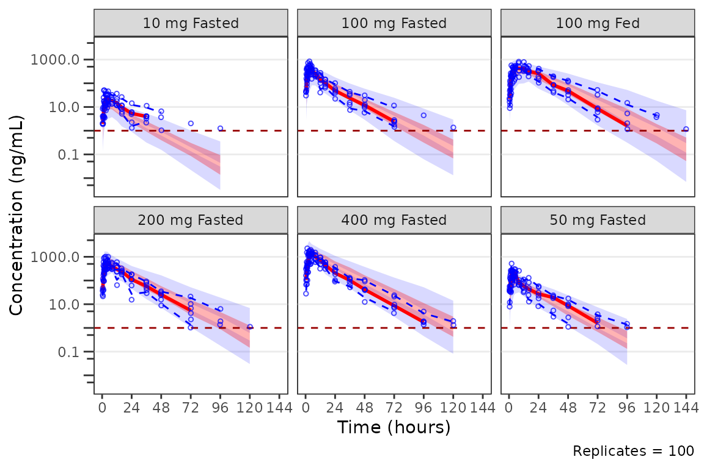
The default for standard VPCs in pmxhelpr is to censor
observed quantiles at the loq when it is known without
censoring simulated values. The loq is inherited from the
input dataset automatically since the variable "LLOQ" is
present in data.
Prediction-correction
Under pcvpc = TRUE, BLQ censoring is still applied
(before prediction-correction, to both observed and simulated data), but
the LOQ reference line is not drawn since loq has no
meaning on the prediction-corrected scale.
plot_vpc_cont(
data = simout,
pcvpc = TRUE,
strat_var = PART
) +
vpc_scales_labs +
labs(y = "Pred-corrected Conc. (ng/mL)")
#> Inheriting per-row `loq` from `LLOQ` column in `data`.Stratifying plots
The other option to prediction-correction is to stratify by
confounding factors. Dose is generally the minimum stratification for a
VPC plot. The variable for stratification MUST be passed to the
argument strat_var and not added later only as a
facet_wrap/facet_grid call to the returned
object. plot_vpc_cont() returns a pmx_vpc_plot
object that emits a warning when a facet_wrap() or
facet_grid() layer is added with +, calling
out that the pre-computed VPC statistics will be inconsistent with the
new panels.
Let’s take a look at our prediction-corrected VPC stratified by Food Status.
plot_vpc_cont(
data = mutate(simout, FoodStatus = ifelse(FOOD == 1, "Fed", "Fasted")),
pcvpc = TRUE,
strat_var = FoodStatus
) +
vpc_scales_labs +
labs(y = "Pred-corrected Conc. (ng/mL)")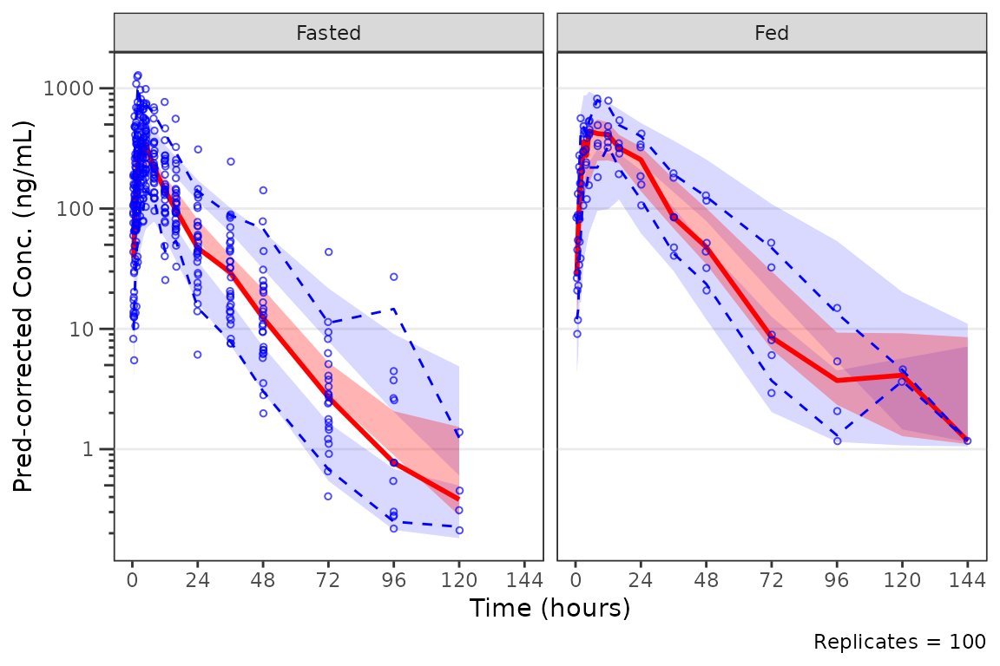
NOTE Because plot_vpc_cont performs BOTH the
summary statistic calculation and the plotting, one cannot simply add a
facet_wrap layer with the stratification after calling
plot_vpc_cont. This will result in the binned observed
quantiles and simulated intervals plotted reflecting the unstratified
data across all conditions with only the observed points stratified.
Simulated and observed intervals in the plot below are
INCORRECT and reflect the full dataset, not the
DoseFood stratification. Only the observed points are
correctly stratified, as they are added to the final plot layer. The
warning printed above the plot is emitted by the
+.pmx_vpc_plot method as the facet_wrap()
layer is added.
plot_vpc_cont(
data = simout
) +
facet_wrap(~DoseFood) +
vpc_scales_labs
#> Inheriting per-row `loq` from `LLOQ` column in `data`.
#> Warning: Adding `facet_*()` to a `plot_vpc_cont()` plot produces incorrect VPC statistics.
#> ℹ Summary statistics are pre-computed before plotting.
#> ℹ Pass `strat_var` to `plot_vpc_cont()` to stratify both statistics and panels correctly.
#> Warning: Removed 18 rows containing missing values or values outside the scale range
#> (`geom_line()`).
#> Warning: Removed 36 rows containing missing values or values outside the scale range
#> (`geom_line()`).
#> Warning: Removed 6 rows containing missing values or values outside the scale range
#> (`geom_line()`).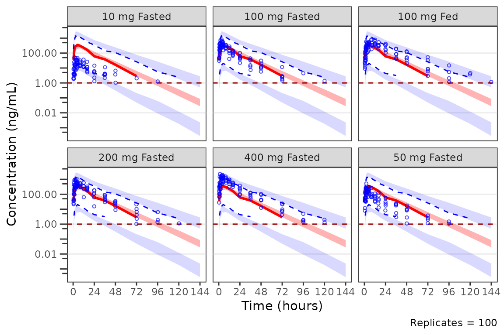
Dropping small sample bins
There may be nominal time bins that contain only a small number of
observations that skew the simulated intervals.
plot_vpc_cont() includes the argument
min_bin_count (default = 1), which filters out exact bins
with fewer quantifiable observations than the minimum set by this
argument. Importantly, the observed data points in these small bins are
still plotted; however, they do not influence the calculation
of summary statistics or summary plot elements (shaded intervals,
lines). This provides the greatest fidelity to the data visualized
without introducing visual artifacts due to small sample timepoints.
When setting min_bin_count = 10, summary statistics are
not plotted for the final two timepoints containing fewer than 10
quantifiable observations; however, the observations themselves are
still plotted.
plot_vpc_cont(
data = simout,
pcvpc = TRUE,
min_bin_count = 10
) +
vpc_scales_labs +
labs(y = "Pred-corrected Conc. (ng/mL)")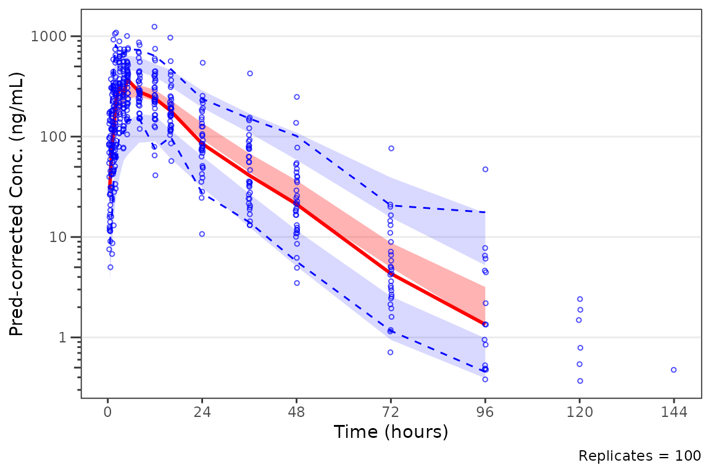
BLQ handling
BLQ data are often ignored in population PK modeling (i.e., set as missing; M1 method) in population. This is unlikely to introduce appreciable bias in model parameter estimation, provided the absolute frequency of BLQ data is low (e.g., <10-20%) and the pattern of BLQ censoring is in line with the expectations by dose and time.
However, the handling of BLQ data in VPCs may impact the interpretation of these graphical model diagnostics.
Let’s generate some VPC plots to demonstrate the impact of different
approaches to BLQ handling to the visual assessment of the adequacy of
model fit and the true underlying PK profile. We will continue using the
simout object generated above.
Let’s start by focusing on evaluating the model fit of the 100 mg dose level we have been exploring across Part1-SAD and Part2-FE.
A common approach to plotting VPCs, especially pcVPCs, is to exclude
all MDV=1 observations. Let’s plot using
plot_vpc_cont() filtering out MDV=1 in the
input dataset to exclude observed BLQ timepoints.
plot_vpc_cont(
data = filter(sim100, MDV == 0),
pcvpc = TRUE,
strat_var = PART
) +
vpc_scales_labs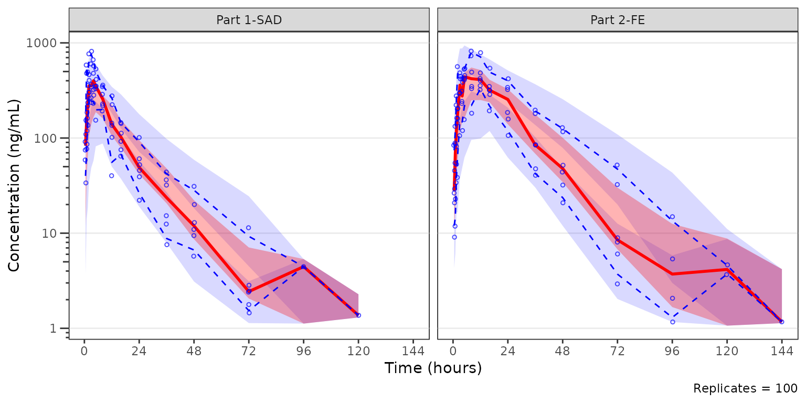
The observed median appears consistent with the exploratory
concentration-time profiles generated earlier excluding data below the
lower limit of quantification (i.e., plotting "ODV").
Notice that the increasing trend in the observed quantiles at later
timelines coincides with completely overlapping simulated confidence
intervals for all quantiles. This is due to the decreasing sample size
with time due to exclusion of timepoints where MDV=1.
Let’s instead try specifying a new argument loq to
plot_vpc_cont().
loq is the numeric value of the lower limit of
quantification in the units of the dependent variable. When specified,
observed quantiles are computed using censored quantile estimation,
where values below the LLOQ (including missing values) are treated as
left-censored. If the quantile of the observed data falls below the
LLOQ, it is returned as NA.
vpc <- plot_vpc_cont(
data = sim100,
strat_var = PART,
loq = 1
) +
vpc_scales_labs
vpc
Now we see a red horizontal line depicting the LLOQ (1 ng/mL). Notice also the increase in the y-axis range, the change in the shape of the observed quantiles, and the greater resolution in separation between the confidence intervals.
Specifying loq is the preferred method for plotting VPC
diagnostics with the pmxhelpr package. This is not the
default method due to the all-too-common case where the assay LLOQ is
not known to the analyst.
loq may also be passed for prediction-corrected VPCs
(pcvpc = TRUE). In that case, observed and simulated values
below loq are censored to NA_real_ before
prediction-correction so that both data streams are treated
symmetrically, and no LOQ reference line is drawn (the LOQ has no
meaning on the prediction-corrected scale).
The unique vector of LLOQ values is used automatically
if the variable "LLOQ" is present in the input dataset.
This allows for the scenario in which there are multiple unique LLOQ
values within a single pooled analysis dataset.
plot_vpc_cont(
data = sim100,
strat_var = PART
) +
vpc_scales_labs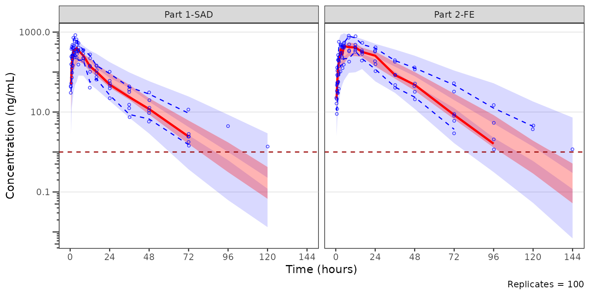
Pooled Data with Multiple LLOQs
A common real-world scenario is a bioanalytical assay update
mid-development: an early cohort runs on the original assay (e.g., LLOQ
= 1 ng/mL) and a later cohort runs on an updated assay (e.g., LLOQ = 2
ng/mL). When the analysis dataset pools both, the LLOQ
column carries different values across rows. pmxhelpr
resolves loq per row so each observation is censored at its
own threshold; the unique non-NA values are surfaced via
config$loq for plotting.
The example below mimics this scenario by re-coding
LLOQ = 2 for the Part 2 food-effect cohort while leaving
Part 1 at the original LLOQ = 1.
sim100_multi_loq <- sim100
sim100_multi_loq$LLOQ[sim100_multi_loq$PART == "Part 2-FE"] <- 2
distinct(sim100_multi_loq, PART, LLOQ)
#> PART LLOQ
#> 1 Part 1-SAD 1
#> 2 Part 2-FE 2Calling df_vpcstats() on this pooled dataset emits the
per-row inheritance message and stores the sorted unique values in
config$loq. The row-aligned threshold remains accessible on
out_multi$obs$LOQ for any downstream code that needs the
per-observation value.
out_multi <- df_vpcstats(sim100_multi_loq, strat_var = PART)
#> Inheriting per-row `loq` from `LLOQ` column in `data`.
out_multi$config$loq
#> [1] 1 2plot_vpc_cont() consumes the precomputed stats and draws
one dashed reference line per unique LLOQ value.
vpc_multi <- plot_vpc_cont(out_multi) + vpc_scales_labs
vpc_multi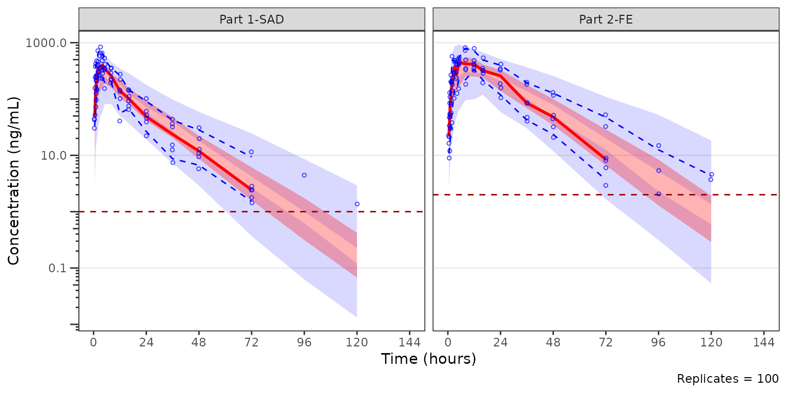
Each facet renders only the LLOQ(s) applicable to that strat-level:
Part 1-SAD shows the LLOQ = 1 line and Part 2-FE shows LLOQ = 2. The
ref-line set is recomputed at plot time from the row-aligned
obs$LOQ column grouped by strat_var, so the
visualization stays in sync with whatever per-row inheritance produced.
The legend (built from out_multi$config$loq) still
summarizes the analysis-wide set of LLOQs, since the legend is a
figure-level annotation rather than a facet-level one.
plot_vpc_legend() accepts the same vector and registers
one entry per unique LLOQ value.
vpc_multi_legend <- plot_vpc_legend(lloq = out_multi$config$loq)
vpc_multi_legend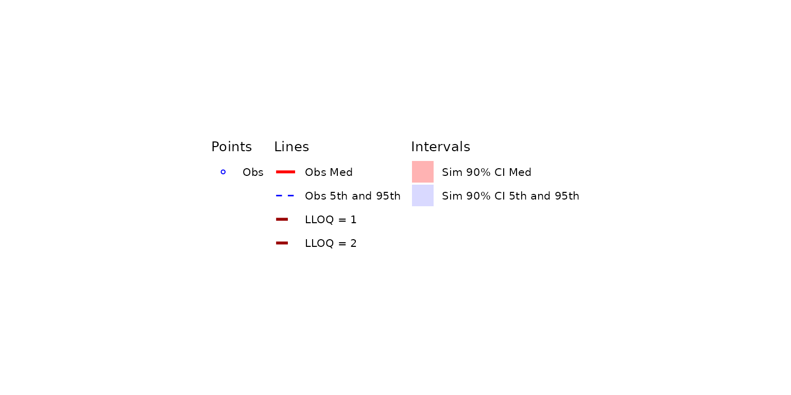
Composing the plot and legend with patchwork yields a
single figure where both LLOQ thresholds are simultaneously labeled.
vpc_multi + vpc_multi_legend + plot_layout(heights = c(2.5, 1))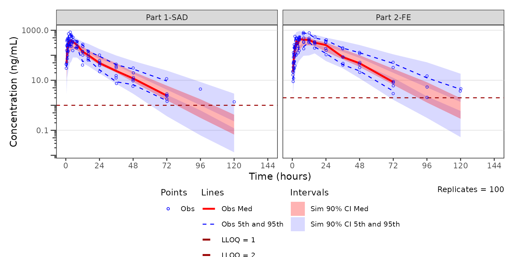
Passing out_multi$config$loq directly to
plot_vpc_legend() keeps the legend in sync with whatever
LLOQs df_vpcstats() discovered, with no need to hardcode
the value set at the call site.
Reusing precomputed stats
plot_vpc_cont() also accepts the list returned by
df_vpcstats() directly. This skips the preprocess + compute
steps and is useful when you want to inspect the summary statistics and
then plot the same data multiple times — for example, flipping between
the standard and prediction-corrected views, or rendering with a
different min_bin_count, shown, or
theme — without paying the summarization cost on every
call.
The df_vpcstats() return is class-tagged
"vpc_stats" (see Inspecting the
vpc_stats object above for print() /
summary() / as.data.frame() /
is_vpc_stats() usage). Use out$stats and
out$obs to access the underlying frames directly.
out <- df_vpcstats(data = simout, strat_var = DoseFood)
#> Inheriting per-row `loq` from `LLOQ` column in `data`.
# Standard VPC view from the precomputed result
plot_vpc_cont(out, pcvpc = FALSE) + vpc_scales_labs
# Prediction-corrected view from the same precomputed result
plot_vpc_cont(out, pcvpc = TRUE) +
vpc_scales_labs +
labs(y = "Pred-corrected Conc. (ng/mL)")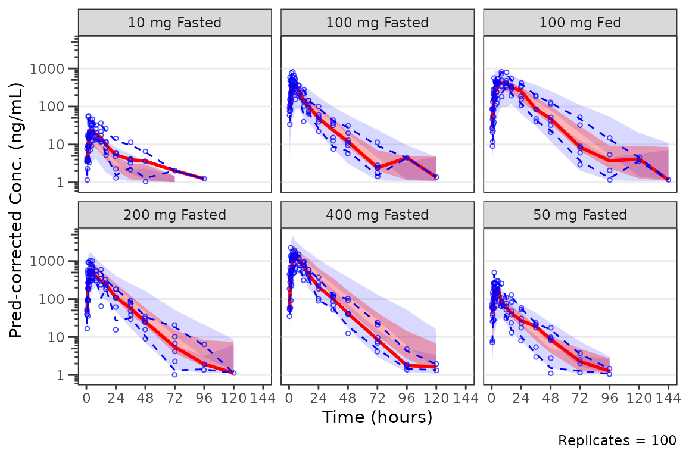
When data is a precomputed df_vpcstats()
result, the pipeline arguments (strat_var,
loq, mode, pi, ci,
column-name args) cannot be honored — those decisions
were already made when df_vpcstats() ran, and re-passing
them on the cached path would silently shadow the original values.
Passing any of them aborts with a message pointing the caller back at
df_vpcstats(). Only plot-only arguments
(min_bin_count, show_rep, shown,
theme, pcvpc) are accepted on this path; to
change a pipeline setting, re-run df_vpcstats() and pass
the new result.
plot_vpc_cont censors quantiles of the observed data
displayed as lines when the corresponding quantile of observations is
BLQ. This is done automatically if the variable LLOQ is
present in the input simulated dataset.
Adjusting the elements displayed
The default elements shown in the plot are controlled by the
shown argument in plot_vpc_cont().
The default is as follows:
plot_vpc_shown()
#> $obs_point
#> [1] TRUE
#>
#> $obs_pi_line
#> [1] TRUE
#>
#> $obs_median_line
#> [1] TRUE
#>
#> $sim_pi_line
#> [1] FALSE
#>
#> $sim_pi_ci
#> [1] TRUE
#>
#> $sim_pi_area
#> [1] FALSE
#>
#> $sim_median_line
#> [1] FALSE
#>
#> $sim_median_ci
#> [1] TRUEThe components of the list correspond to the following vpc plot elements:
- Observed points:
obs_point - Observed quantile lines:
obs_pi_line - Observed median line:
obs_median_line - Simulated prediction interval lines:
sim_pi_line - Simulated prediction interval CI:
sim_pi_ci - Simulated prediction interval area:
sim_pi_area - Simulated median line:
sim_median_line - Simulated median CI:
sim_median_ci
One or more elements to be updated from the defaults above can be
passed as a list to the argument shown. Any elements not
specified in shown will inherit the defaults.
For example, the 90% prediction interval (i.e., 5th to 95th percentiles) can be visualized in place of CIs of each of the 5th and 95th percentiles with the observed and simulated medians shown as follows:
plot_vpc_cont(
data = simout,
pcvpc = TRUE,
min_bin_count = 5,
shown = plot_vpc_shown(obs_pi_line = FALSE, sim_pi_ci = FALSE, sim_median_ci = FALSE, sim_median_line = TRUE, sim_pi_area = TRUE)
) +
vpc_scales_labs +
labs(y = "Pred-corrected Conc. (ng/mL)")
#> Inheriting per-row `loq` from `LLOQ` column in `data`.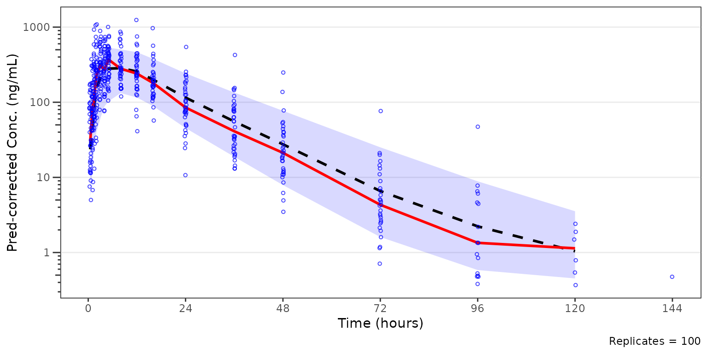
Now, let’s say we want to remove the observed data points from the
plot above to better visualize the observed quantile lines relative to
their corresponding simulated confidence intervals. This can be
accomplished with shown.
plot_vpc_cont(
data = simout,
pcvpc = TRUE,
min_bin_count = 5,
shown = plot_vpc_shown(obs_point = FALSE)
) +
vpc_scales_labs +
labs(y = "Pred-corrected Conc. (ng/mL)")
#> Inheriting per-row `loq` from `LLOQ` column in `data`.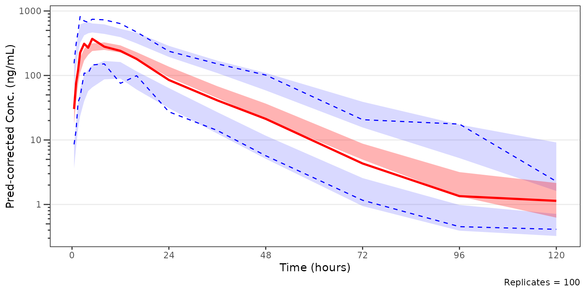
We could also take this one step further and only look at the median and the simulated confidence interval of the median, to closely interrogate central tendency. This is common for VPC strata which have few observations, leading to inadequate sample size to discriminate between the confidence intervals of the median and the extremes. This is common scenario when evaluating VPC plots stratified by individual study arms in early phase trials.
plot_vpc_cont(
data = simout,
pcvpc = TRUE,
min_bin_count = 5,
shown = plot_vpc_shown(obs_point = FALSE, obs_pi_line = FALSE, sim_pi_ci = FALSE)
) +
vpc_scales_labs +
labs(y = "Pred-corrected Conc. (ng/mL)")
#> Inheriting per-row `loq` from `LLOQ` column in `data`.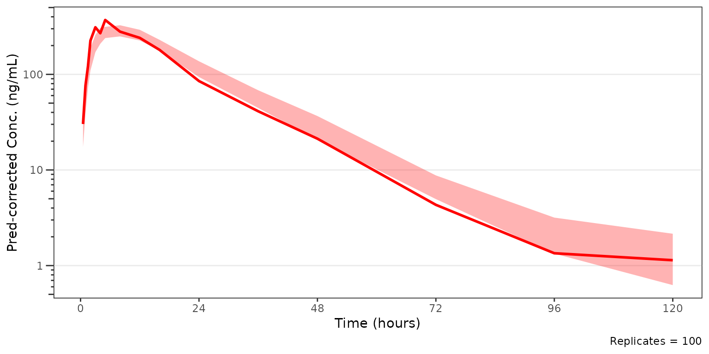
Building plots from a vpc_stats object directly
For downstream code or custom workflows that produce a
vpc_stats-shaped object outside df_vpcstats()
(e.g. external preprocessing, snapshot fixtures),
plot_build_vpc() is exported as the public renderer. It is
the same engine that plot_vpc_cont() uses internally and
accepts the same plot-only arguments (min_bin_count,
show_rep, shown, theme,
pcvpc). strat_var and loq inherit
from the container’s $config slot when not passed
explicitly.
plot_build_vpc(out, pcvpc = FALSE) + vpc_scales_labs
Adjusting the Plot Theme with plot_vpc_theme()
The default aesthetics for VPC plots are controlled via
plot_vpc_theme(). See the Plot
Themes and Aesthetics vignette for details on the theme system,
element constructors, and examples of customizing VPC aesthetics.
plot_vpc_theme()
#> <plot_vpc_theme>
#> obs_point <pmx_point>: shape = 1, size = 1, alpha = 0.7, color = #0000FF
#> obs_median_line <pmx_line>: linewidth = 1, linetype = solid, color = #FF0000
#> obs_pi_line <pmx_line>: linewidth = 0.5, linetype = dashed, color = #0000FF
#> sim_pi_line <pmx_line>: linewidth = 1, linetype = dotted, color = #000000
#> sim_pi_ci <pmx_ribbon>: fill = #0000FF, alpha = 0.15
#> sim_pi_area <pmx_ribbon>: fill = #0000FF, alpha = 0.15
#> sim_median_line <pmx_line>: linewidth = 1, linetype = dashed, color = #000000
#> sim_median_ci <pmx_ribbon>: fill = #FF0000, alpha = 0.3
#> loq_line <pmx_line>: linewidth = 0.5, linetype = dashed, color = #990000We can define an alternative theme using a blue / grey color schema using this function and the constructor helpers.
vpc_new_theme <- plot_vpc_theme(
obs_point = pmx_point(color = "#000000"),
obs_median_line = pmx_line(color = "#000000"),
obs_pi_line = pmx_line(color = "#000000"),
sim_median_ci = pmx_ribbon(fill = "#3388cc"),
sim_pi_ci = pmx_ribbon(fill = "#3388cc")
)Regenerating our BLQ quantile censored plot stratified by part with the new theme yields the following plot
vpc2 <- plot_vpc_cont(
data = sim100,
strat_var = PART,
loq = 1,
theme = vpc_new_theme
) +
vpc_scales_labs
vpc2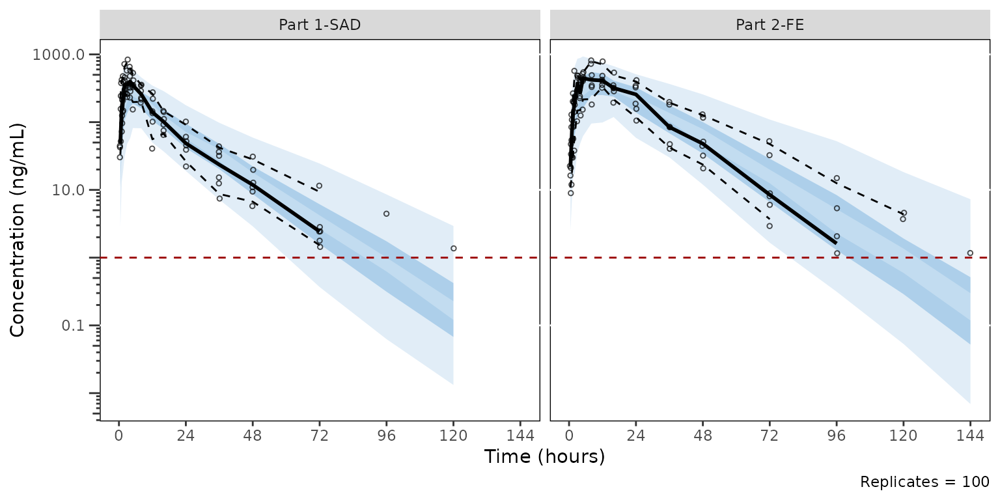
Modifying Axes and Labels
Because plot_vpc_cont() returns a ggplot2
object, the y-axis can be transformed to log10 scale by adding
scale_y_log10() as a layer. This approach avoids any data
transformation prior to calculating summary statistics, ensuring all
quantile calculations are performed on the original scale.
Similarly, the axis labels can be controlled with labs
and the x-axis breaks can be set to more reasonable values for time
units using scale_x_continuous().
VPC Plots with plot_vpc_cens()
plot_vpc_cens() is the companion diagnostic to
plot_vpc_cont(). Where plot_vpc_cont()
evaluates whether the model reproduces the dynamic range of the data
above the LOQ, plot_vpc_cens() evaluates whether it
reproduces the proportion of BLQ observations over time. It plots
obs_prop_blq (the per-bin observed BLQ proportion) and the
non-parametric confidence interval of sim_prop_blq across
replicates.
Both quantities are already computed by df_vpcstats()
whenever a LOQ source (scalar loq or LLOQ
column) is available, so plot_vpc_cens() is a thin plotting
wrapper over the same VPC summary pipeline used by
plot_vpc_cont().
plot_vpc_cens() is standard-VPC only, as LOQ has no
meaning on the prediction-corrected scale, and the pcvpc
argument is omitted. A LOQ source is required (scalar loq
or an LLOQ column inherited from data).
Like plot_vpc_cont(), plot_vpc_cens() also
accepts a pre-computed list returned by df_vpcstats()
directly. This workflow adds efficiencies for cases where a user wants
to evaluate the continuous and censored ranges with the same
binning.
plot_vpc_cens(
data = sim100,
strat_var = PART,
loq = 1
) +
vpc_cens_scales_labs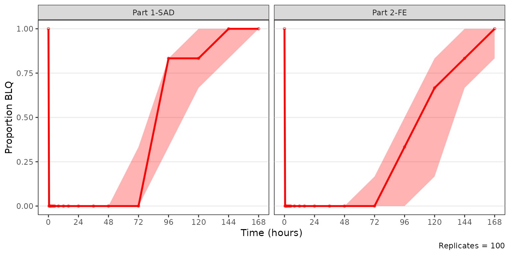
The ribbon is the non-parametric CI of the simulated BLQ proportion
across replicates (controlled by ci), and the solid red
line and points show the observed proportion per bin. A well-fitting
model places the observed line inside the simulated CI band. The
simulated median line is hidden by default. It can be enabled via
shown = plot_vpc_shown(sim_median_line = TRUE).
plot_vpc_cens() reuses plot_vpc_shown() and
plot_vpc_theme() — only the keys obs_point,
obs_median_line, sim_median_line, and
sim_median_ci are read with other keys ignored.
Dropping small sample bins
plot_vpc_cens() accepts the same
min_bin_count argument as plot_vpc_cont(), but
the count statistic it filters against differs by design.
plot_vpc_cont() counts quantifiable
(non-missing, non-BLQ) observations per bin — values that contribute to
the continuous range quantiles. plot_vpc_cens() counts
total observations per bin, including BLQ records,
because the BLQ frequency is the diagnostic.
The practical consequence: for a bin with 12 observations and 8 BLQ
values, plot_vpc_cont(min_bin_count = 10) drops the bin
(only 4 quantifiable observations meet the threshold) while
plot_vpc_cens(min_bin_count = 10) keeps it (12 total
observations meet the threshold). Set min_bin_count
per-function rather than reusing a single threshold across both
diagnostics — the same numeric value will not in general produce the
same bin-retention behavior.
A second contrast worth noting: because obs_n is
determined by the protocol-specified sampling schedule (every subject in
a stratum contributes one observation per nominal time bin),
obs_n is effectively constant across bins within a stratum.
As a result, min_bin_count on a cens VPC behaves more like
a stratum-level filter than the bin-level filter it is on a cont VPC.
The example below uses the full simout (across all SAD dose
levels) so that Part 1-SAD has 30 observations per bin (5 dose cohorts ×
6 subjects) while Part 2-FE has 6. Setting
min_bin_count = 10 retains every Part 1-SAD bin and drops
the entire Part 2-FE panel.
cens_vpc <- plot_vpc_cens(
data = simout,
strat_var = PART,
loq = 1,
min_bin_count = 10
) +
vpc_cens_scales_labs
cens_vpc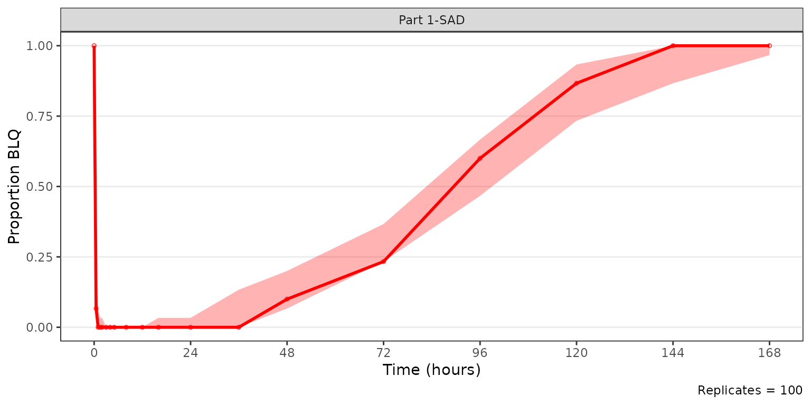
Pairing pcVPC and cens VPC for the same strata
plot_vpc_cont() and plot_vpc_cens() are
complementary halves of a single diagnostic: the pcVPC interrogates
whether the model captures the dynamic range above LOQ, while the cens
VPC interrogates whether it captures the censoring frequency. Composed
together on a shared time axis they make one figure that summarizes both
halves of the diagnostic for the same stratification.
Build the pcVPC and cens VPC on sim100 using
strat_var = PART. The bottom panel will carry the shared
x-axis label, so the top panel sets x = NULL.
patch_stats <- df_vpcstats(data = sim100, strat_var = PART)
pcvpc_patch <- plot_vpc_cont(
data = patch_stats,
pcvpc = TRUE
) +
vpc_scales_labs +
labs(x = NULL, y = "Pred-corrected Conc. (ng/mL)")
cens_vpc_patch <- plot_vpc_cens(
data = patch_stats
) +
vpc_cens_scales_labsStack the two diagnostics vertically with patchwork,
prediction-corrected continuous range on top and censored range below.
Both panels are built from the same sim100 data and the
same PART stratification, so the time bins align across the
figure.
pcvpc_patch / cens_vpc_patch + plot_layout(heights = c(2, 1))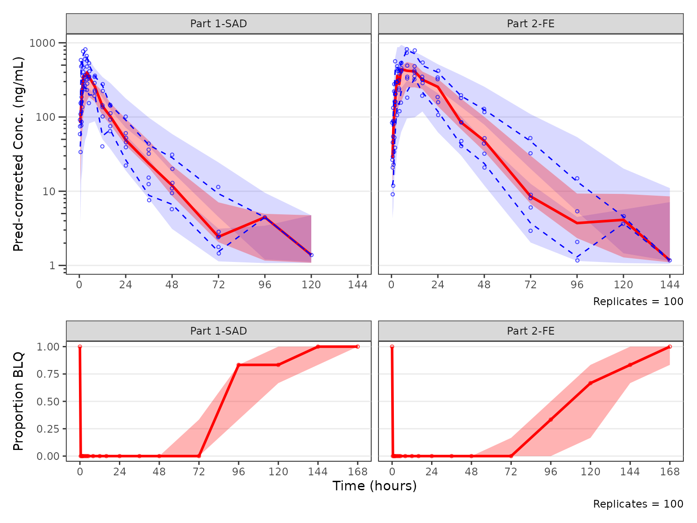
VPC Plot Legends with plot_vpc_legend()
This section will review the functionality for generating legends for
VPC plots with plot_vpc_legend()
plot_vpc_legend() is a helper plotting function that
creates a legend for VPC plots. These legends can then be merged with
the VPC plot into a single plot object using the patchwork
package.
Defaults for Continuous Range VPCs in
plot_vpc_legend()
To obtain a legend for a quantifiable range VPC plot using default
aesthetics, run plot_vpc_legend(). The default type
argument is type="cont" for continuous range VPC.
Pass lloq to include an LLOQ entry that mirrors the
reference line drawn by plot_vpc_cont().
vpc_legend <- plot_vpc_legend(lloq = 1)
vpc_legend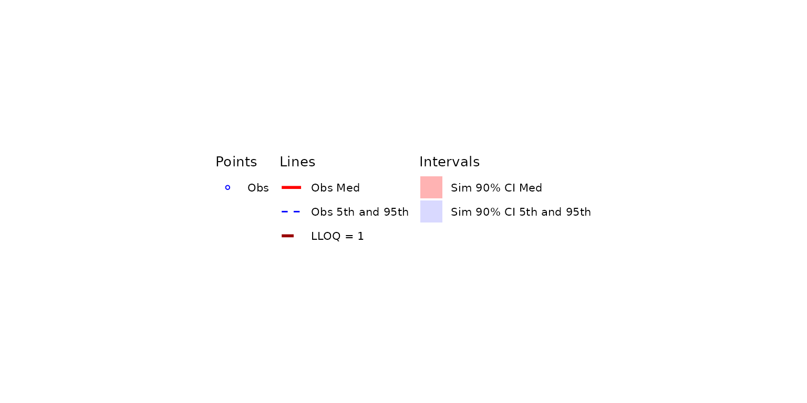
The legend can then be combined with the ggplot object returned from
plot_vpc_cont() into a single plot object with the
patchwork package. We pair the default-theme legend with
vpc (the LOQ-censored, PART-stratified plot from the BLQ handling section, which also uses the
default theme).
vpc_wleg <- vpc + vpc_legend + plot_layout(heights = c(2.5, 1))
vpc_wleg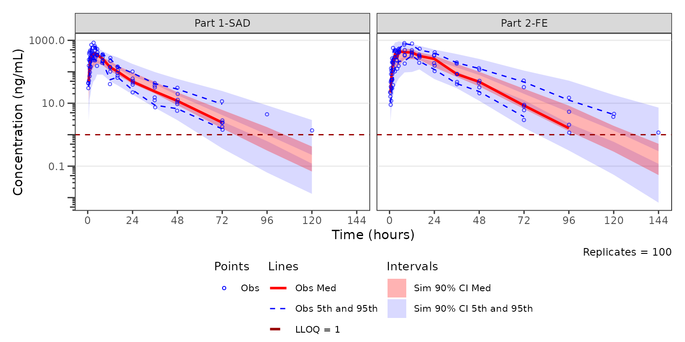
Updating the Continuous Range Legend Elements with
plot_vpc_shown()
The legend can be updated to remove or add elements based on
shown argument common to plot_vpc_cont() and
plot_vpc_legend(). The defaults list can be viewed and
updated globally to be passed to all plots in a VPC workflow using
plot_vpc_shown(). Assigning the modified element set to a
shown_elements object lets the same configuration be reused
by both the plot and the legend.
shown_elements <- plot_vpc_shown(obs_pi_line = FALSE, sim_pi_ci = FALSE)
plot_vpc_legend(shown = shown_elements)Updating the Continuous Range Legend Theme with
plot_vpc_legend()
The legend can also be updated with the updated VPC plot theme
elements. This is easiest to do by setting a new theme object, which we
did previously when we created vpc_new_theme with
plot_vpc_theme(). We can use this same theme list object to
generate the VPC plot with plot_vpc_cont() and the VPC
legend with plot_vpc_legend(), again passing
lloq = 1 to keep the legend in sync with the LLOQ ref line
on vpc2.
vpc_new_legend <- plot_vpc_legend(lloq = 1, theme = vpc_new_theme)
vpc_new_legendThe legend can then be combined with the ggplot object returned from
plot_vpc_cont() into a single plot object with the
patchwork package. We pair vpc_new_legend
(which uses vpc_new_theme) with vpc2 (the same
VPC plot rendered with vpc_new_theme earlier).
vpc_wleg2 <- vpc2 + vpc_new_legend + plot_layout(heights = c(2.5, 1))
vpc_wleg2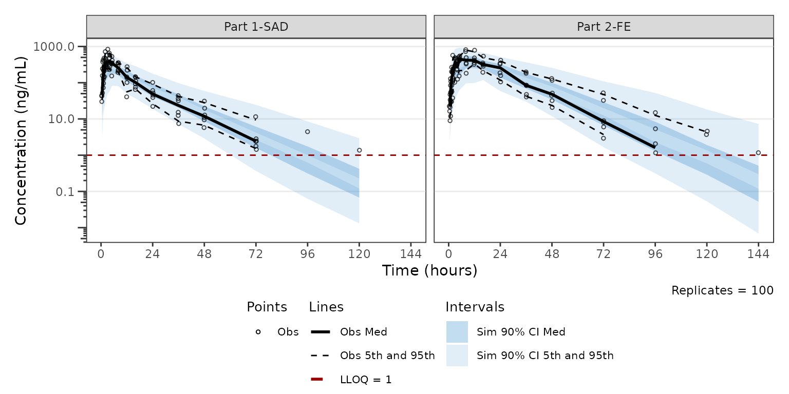
Updating the censored range legend elements and theme with
plot_vpc_shown() and
plot_vpc_legend(type = "cens")
By default sim_median_line is hidden
(plot_vpc_shown() sets it to FALSE) and
sim_median_ci inherits the same red fill as
obs_median_line from plot_vpc_theme(). This is
fine when only the ribbon is shown, but enabling the simulated median
line on top of the default theme places a black dashed line over a red
ribbon next to a red observed line. With these aesthetics, the red
observed line could easily be mistaken for a simulation element given
color homology with the simulated interval.
A practical convention is to (a) enable sim_median_line
so the simulated central tendency is visible alongside its CI, and (b)
recolor the simulated layers together so the line and ribbon read as one
element, with the observed layers in a contrasting color.
plot_vpc_cens() reads four shown keys
(obs_point, obs_median_line,
sim_median_line, sim_median_ci) and the four
corresponding theme keys. Build matching
cens_shown and cens_theme objects so the
change is explicit and reusable:
cens_shown <- plot_vpc_shown(sim_median_line = TRUE)
cens_theme <- plot_vpc_theme(
obs_point = pmx_point(color = "#000000"),
obs_median_line = pmx_line(color = "#000000"),
sim_median_line = pmx_line(color = "#3388cc", linetype = "solid"),
sim_median_ci = pmx_ribbon(fill = "#3388cc")
)Re-render the cens VPC with both objects applied. The simulated median sits inside its 90% CI ribbon (both blue), while the observed proportion is drawn in black for visual separation.
cens_vpc_themed <- plot_vpc_cens(
data = sim100,
strat_var = PART,
loq = 1,
shown = cens_shown,
theme = cens_theme
) +
vpc_cens_scales_labs
cens_vpc_themed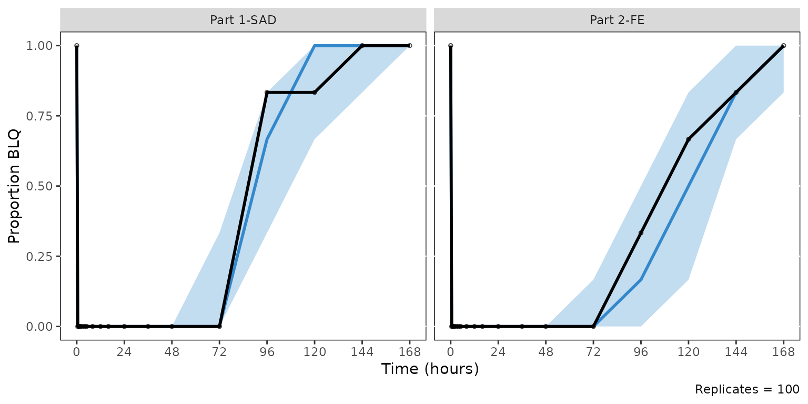
plot_vpc_legend() accepts the same shown
and theme objects, so passing them alongside
type = "cens" keeps the legend in sync with whatever
combination of visibility toggles and aesthetic overrides was used for
the panel. The Sim Prop BLQ entry now appears (because
sim_median_line is on) and both simulated entries adopt the
unified blue.
cens_legend_themed <- plot_vpc_legend(
type = "cens",
lloq = 1,
shown = cens_shown,
theme = cens_theme
)
cens_vpc_themed + cens_legend_themed + plot_layout(heights = c(2.5, 1))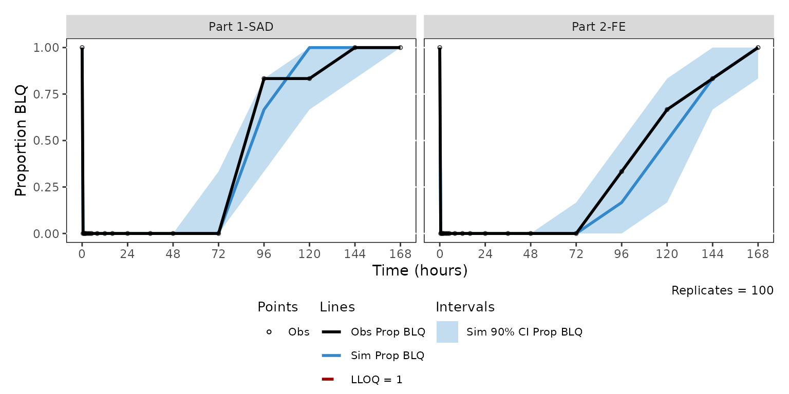
Patchworked legend with
plot_vpc_legend(type = "cens")
plot_vpc_legend() accepts type = "cens"
argument to produce a legend with the default labels for a censored data
VPC ("Obs Prop BLQ", "Sim Prop BLQ",
"Sim 90% CI Prop BLQ"). Prediction-interval related entries
are suppressed regardless of shown.
Pass lloq to mirror the LOQ source the cens VPC was
built against.
cens_legend <- plot_vpc_legend(type = "cens", lloq = 1)
cens_legendThe cens VPC and its legend can be combined into a single figure with
the patchwork package, using the same heights ratio
established for the cont legend pattern.
cens_vpc + cens_legend + plot_layout(heights = c(2.5, 1))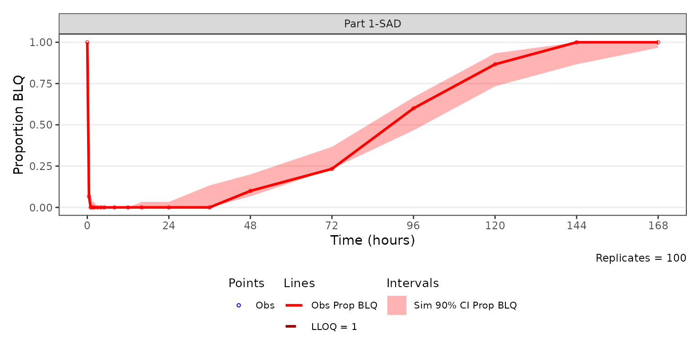
Panel observed and censored range VPCs together with legends using
patchwork
We can add legends to our stacked continuous data range pcVPC on top
and censored data range VPC on bottom. Both panels are built from the
same sim100 data and the same PART
stratification, so the time bins align across the figure.
pcvpc_patch / vpc_legend / cens_vpc_patch / cens_legend +
plot_layout(heights = c(2, 0.5, 2, 0.5))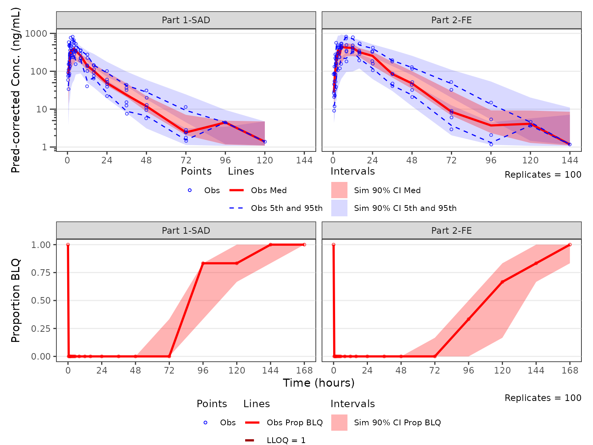
See also
- PK and PK/PD EDA workflow — exploratory analysis of continuous longitudinal concentration-time data, response-time, and response-concentration data.